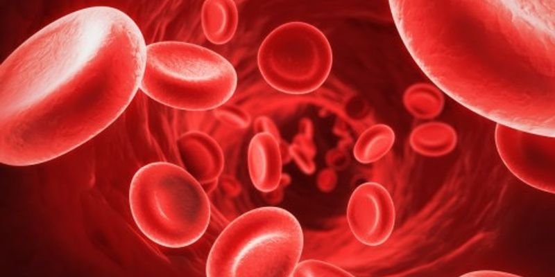
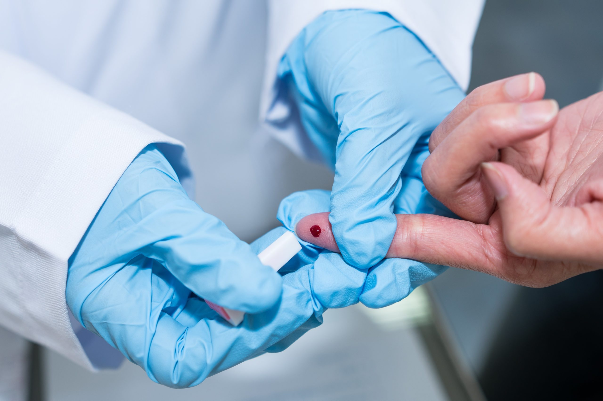
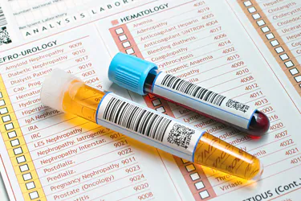
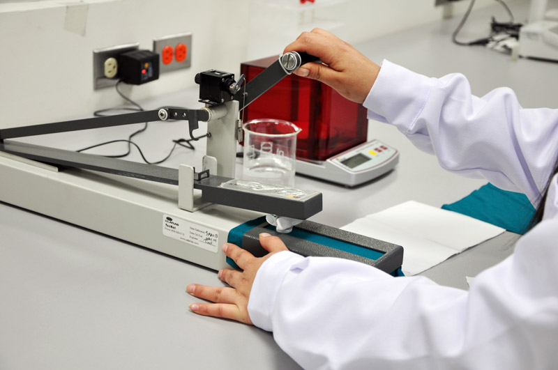

Encourage the highest level of professionalism, |
Our laboratories handle and prepare medical specimens/ samples for analysis, process and analyze these samples then deliver the test results/ findings to our patients and their requsting doctors. Our fully licensed Medical Laboratory offers a wide range of services in the following key sections:
This section analyses patients' blood, looking for abnormalities in red blood cells, white blood cells, platelets, and plasma components relating to homeostasis (clotting factors). This section also provides blood and blood products for emergency situations and for transfusion patients who are going for surgery. |
 |
This section analyses the biochemical components of blood, urine, and other body fluids(e.g.cerebrospinal fluid, pleural fluid, ascetic fluid, gastric fliud etc.) for the diagnonis, prognosis and monitoring diseases. |
This section provides a range of highly specialized tests from tumour markers to fertility hormones and also therapeutic drug monitoring. |
This section screens patients for infections diseases like Hepatitis, Rubella, Mycoplasma, Dengue, Syphilis and others. Also, through participation in the HIV National Proficiency Testing, we help to diagnose and confirm cases of HIV. We are officially licensed by the srilanka Ministry of Health through the Licensing & Accreditation Branch. |
 |
This section detects illnesses in patients due to bacteria, fungi and parasites. We use the proven BacT/Alert Microbial Detection System for the rapid detection and reporting of positive blood cultures by continuous and precise monitoring. We are able to perform both the 13C-Urea Breath Test and 13C-Lactose Breath Test. Urea breath test is a simple test conducted on a patient's breath to detect H. pylori infection. It is widely recognized as the "gold standard" for in vivo diagnosis of H. pylori infection. The Lactose Breath test is done to diagnose lactose intolerance. |
This section analyses patients' body fluids, stool and urine to detect possible illnesses. This is done mostly by microscopic examination for cellular elements and parasites. Other methods include simple strip tests such the immunological method of occult blood detection. |
 |
Phlebotomy services for outpatients are available during the outpatient operating hours at our laboratory. |
Our laboratories are geared to provide urgent and immediate medical testing for emergency situations where time is critical. For example, a STAT REPORT can be issued to the WAITING PATIENT if so indicated by the physician. One of the key resources we utilize for maximum speed reporting is our Laboratory Information System. This is a state-of-the-art IT system which is fully integrated with our New Life Hospital Information System for Laboratory tests management and reporting. With the speed and efficiency provided by this system, laboratory test reports are usually completed within 24 hours. |
The quality and accuracy of data is mission-critical in our work. To guarantee the integrity of our data, internal QC & calibration processes are strictly monitored on a daily basis. We also participate in external quality assurance programmers to ensure the achievement of our service quality mission. The integrity and reliability of our testing process is evident in the quality of the analytical results we produce. Our instruments are kept up-to-date with advances in technology and we employ regular strict preventive and service maintenance regimes on all instruments. We have a full complement of skilled and experienced staff in the various specialty sections. The technical competency of the staff is regularly assessed by the many National Proficiency Programmers and meets or exceeds all statutory laboratory requirements. Examples of some of these programmers are the testing for HIV antibodies, ABO and Rhesus blood grouping, malaria parasite and acid-fast bacilli. |
 |
| Services | Doctors | New Life Hospital, No.26, Galle Road , Colombo 6 |
| Facilities | Health Packages | newlifehospital@gmail.com |
| Rooms | Patient Registration | 011 2635981 |
| Food & Beverages. | Channel your doctor | 011 2635982 |
©All Right Reserved | New Life Hospital